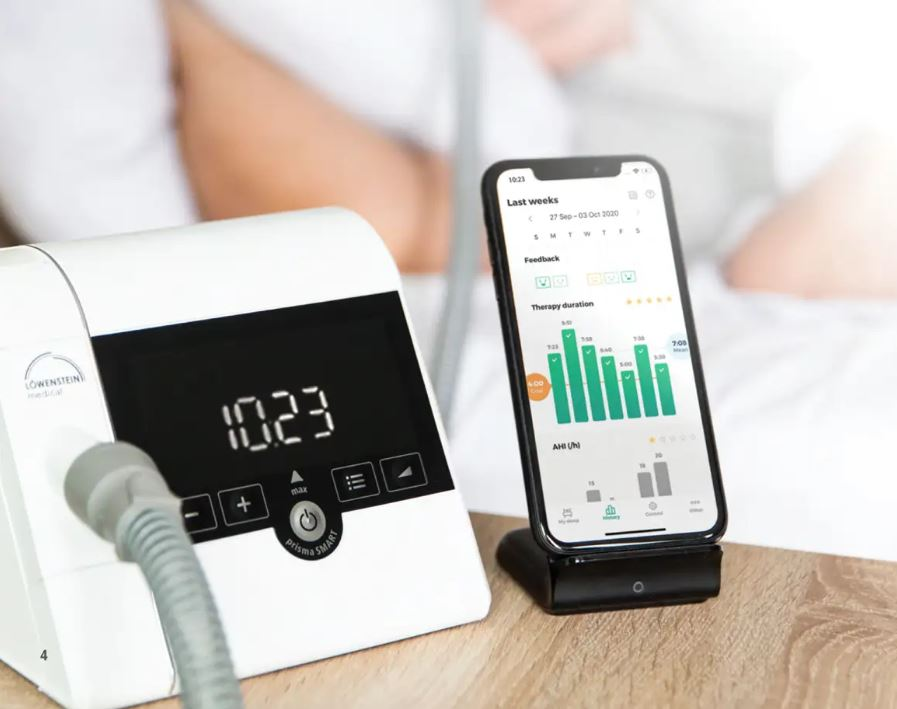
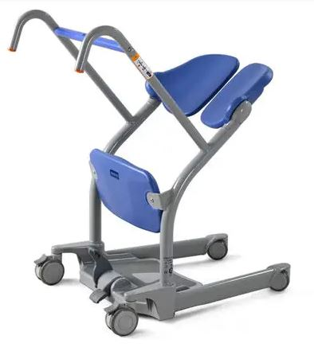

Healthcare Equipment & Supplies · Malta
Trusted technology for healthcare professionals
HospiMalta is an exclusive distributor of various brands and brings high-tech medical equipment and support to hospitals, clinics and care providers across the islands.
Get in touchWe are mainly engaged in public procurement, supplying medical equipment and consumables to Malta's public healthcare sector through official government tenders.
Market Context
The Medical Market in Malta
Malta may be one of the smallest countries in the European Union, but its healthcare sector is a lively, well-funded market for foreign suppliers — a two-tier system of free public healthcare alongside a fast-growing private sector, both dependent on imported equipment, pharmaceuticals, and technology.
-
Public & Private Hospitals
Mater Dei Hospital anchors the public system alongside Karin Grech Hospital, the Sir Anthony Mamo Oncology Centre, and Gozo General Hospital, while private groups such as St James, St Thomas, and DaVinci Health compete on fast access to diagnostics and surgery.
-
Recurring Tender Pipeline
A steady stream of tenders covers everything from neonatal incubators and oncology consumables to diagnostics and national digital health systems — real, recurring opportunities rather than one-off projects.
-
EU-Wide Procurement Access
As an EU member state, higher-value tenders are advertised across the bloc via TED, giving international suppliers equal footing with local ones through a centralised e-procurement platform and multi-year framework agreements.
A small but genuinely accessible and recurring market within the EU procurement framework.

About Us
HospiMalta: Serving Healthcare Professionals
HospiMalta was launched in 2016 as a partnership between Stephen Saliba and Adriano Spiteri, bringing decades of expertise in information technology, law, and medical equipment servicing to Malta's healthcare sector. We supply the very latest high-tech equipment to a demanding clientele, provide local and international user and technical training, and maintain our installed base through preventive maintenance to manufacturers' specifications — always looking to represent new suppliers of cutting-edge technology through long-term partnerships.
Our mission is straightforward: Serving Healthcare Professionals.

Behind HospiMalta
Founded by two industry veterans whose combined experience spans banking, IT, law, and decades of hands-on medical equipment servicing.
Stephen Saliba
Co-Founder (1951–2024)
Stephen brought a rare mix of banking, IT, and educational experience. He spent 22 years at the then Mid-Med Bank Malta (now HSBC) before qualifying as an IT Systems Analyst and opening Malta's first IT high street store in 1986, having also taught computing on Malta's state television programme “Bits.” Stephen passed away in 2024; his vision and dedication remain central to HospiMalta's legacy.
Adriano Spiteri
Co-Founder & Director
Adriano qualified as an industrial electronics technician in 2002, working with Grundig and Lufthansa Technik before fifteen years as Sales and Service Manager for a Siemens and Dräger distributor — including the sale and installation of Malta's first PET-CT scanner. He holds a Bachelor of Laws (Honours) and a Master of Advocacy, with a thesis on “The Role of Technical Specifications in the Public Procurement of Medical Equipment.”
High-Demand Private Sector Requests

CPAP Machines
Löwenstein Medical offers CPAP patients advanced, motor- and mask-noise-optimized devices with intuitive touchscreen controls, integrated humidification, and smart data tracking for easy therapy monitoring by patients and clinicians alike. Their advantage lies in combining German engineering precision with patient comfort features—quiet operation, compact portable designs, and cloud-connected apps that support better therapy adherence and remote follow-up with healthcare providers.

Patient Sit-to-Stand Aids
The Arjo Sara Stedy is a compact, non-powered sit-to-stand aid that helps caregivers safely assist patients with limited mobility to transfer between seated surfaces (bed, chair, wheelchair, toilet) with minimal physical strain. Its simple, lightweight design promotes early mobilization and patient independence while reducing the risk of caregiver injury during transfers.
Contact
Get in touch
Have a question about our products or partnerships? Reach out directly using the details below.
Registration Address
HospiMalta Ltd
7, Triq il-Plejju
Birkirkara BKR4473, Malta
Operational / Shipping Address
HospiMalta Ltd
Triq San Giljan
Birkirkara BKR2806, Malta
Registration Details
VAT/EORI: MT31448730
Company Reg.: C-109951